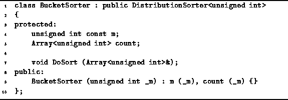
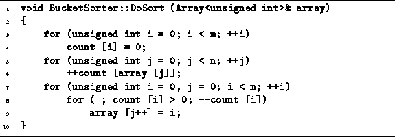
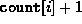
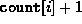
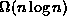

Data Structures and Algorithms
with Object-Oriented Design Patterns in C++
Data Structures and Algorithms
with Object-Oriented Design Patterns in C++
Program  gives the declaration
of the BucketSorter class.
Notice that the BucketSorter class is not a template.
This bucker sorter is designed to sort specifically
an array of unsigned ints.
The BucketSorter class contains two member variables,
m and count.
The unsigned integer m simply keeps track of the size of the universe.
The count variable is an array of unsigned integers
used to count the number of occurrences of each element of the universal set.
gives the declaration
of the BucketSorter class.
Notice that the BucketSorter class is not a template.
This bucker sorter is designed to sort specifically
an array of unsigned ints.
The BucketSorter class contains two member variables,
m and count.
The unsigned integer m simply keeps track of the size of the universe.
The count variable is an array of unsigned integers
used to count the number of occurrences of each element of the universal set.

Program: BucketSorter Class Definition
The constructor for the BucketSorter class takes a single argument which specifies the size of the universal set. The variable m is set to the specified value, and the count array is initialized to have the required size.
The DoSort routine of the BucketSorter
is defined in Program .
This routine is passed a reference to the array of data to be sorted.
DoSort begins by setting all of the counters to zero (lines 3-4).
This can clearly be done in O(m) time.

Program: BucketSorter Class DoSort Member Function Definition
Next, a single pass is made through the data to count the number of occurrences of each element of the universe (lines 5-6). Since each element of the array is examined exactly once, the running time is O(n).
In the final step, the sorted output sequence is created (lines 7-9).
Since the output sequence contains exactly n items,
the body of the inner loop (line 9) is executed exactly n times.
During the  iteration of the outer loop (line 7),
the loop termination test of the inner loop (line 8)
is evaluated  times.
As a result, the total running time of the final step is O(m+n).
iteration of the outer loop (line 7),
the loop termination test of the inner loop (line 8)
is evaluated  times.
As a result, the total running time of the final step is O(m+n).
Thus, the running time of the bucket sort routine is O(m+n). Note that if m=O(n), the running time for bucket sort is O(n). I.e., the bucket sort algorithm is a linear-time sorting algorithm! Bucket sort breaks the  bound associated with sorting algorithms that use binary comparisons because bucket sort does not do any binary comparisons. The cost associated with breaking the running time bound is the O(m) space required for the array of counters. Consequently, bucket sort is practical only for small m. E.g., to sort 16-bit integers using bucket sort requires the use of an array of counters.
 Copyright © 1997 by Bruno R. Preiss, P.Eng. All rights reserved.
Copyright © 1997 by Bruno R. Preiss, P.Eng. All rights reserved.